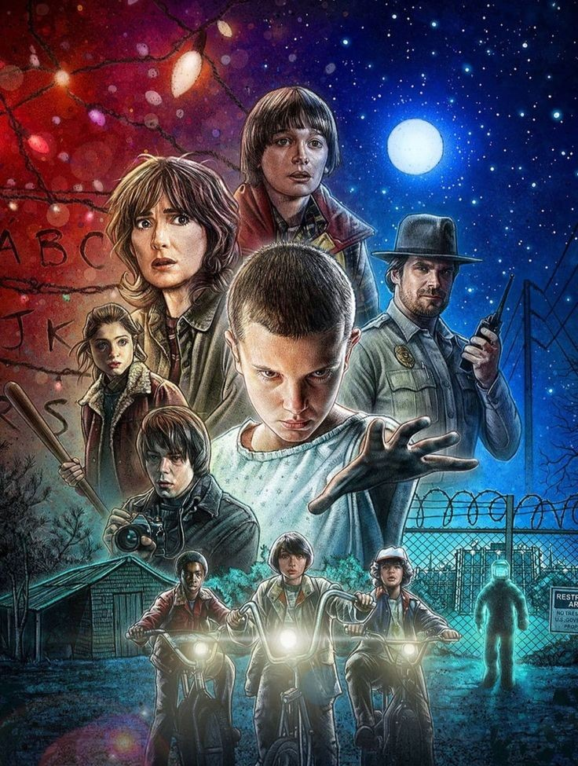

HAWKINS ARCHIVE • FILE 001
ARCHIVO
HAWKINS
Información clasificada sobre la serie, sus personajes y el universo que se esconde detrás del Upside Down.

FILE 001
STRANGER THINGS
Stranger Things
2016 — 2025
Estados Unidos
Ciencia ficción · Terror · Drama · Misterio
Matt Duffer y Ross Duffer
EXPEDIENTE CONFIDENCIAL
DESCUBRÍ LA HISTORIA
FILE 002 / SINOPSIS
EL MISTERIO COMIENZA EN HAWKINS
En 1983, la desaparición de un niño llamado Will Byers cambia para siempre la vida de sus amigos y de toda la comunidad de Hawkins.
Mientras sus amigos lo buscan, conocen a una misteriosa niña con poderes sobrenaturales conocida como Eleven. Al mismo tiempo, comienzan a aparecer señales de una dimensión paralela conocida como el Upside Down.
A partir de ese momento, los habitantes de Hawkins deberán enfrentarse a criaturas, experimentos secretos y fenómenos que ponen en peligro a toda la ciudad.
"EL UPSIDE DOWN ESTÁ MÁS CERCA DE LO QUE CREES."